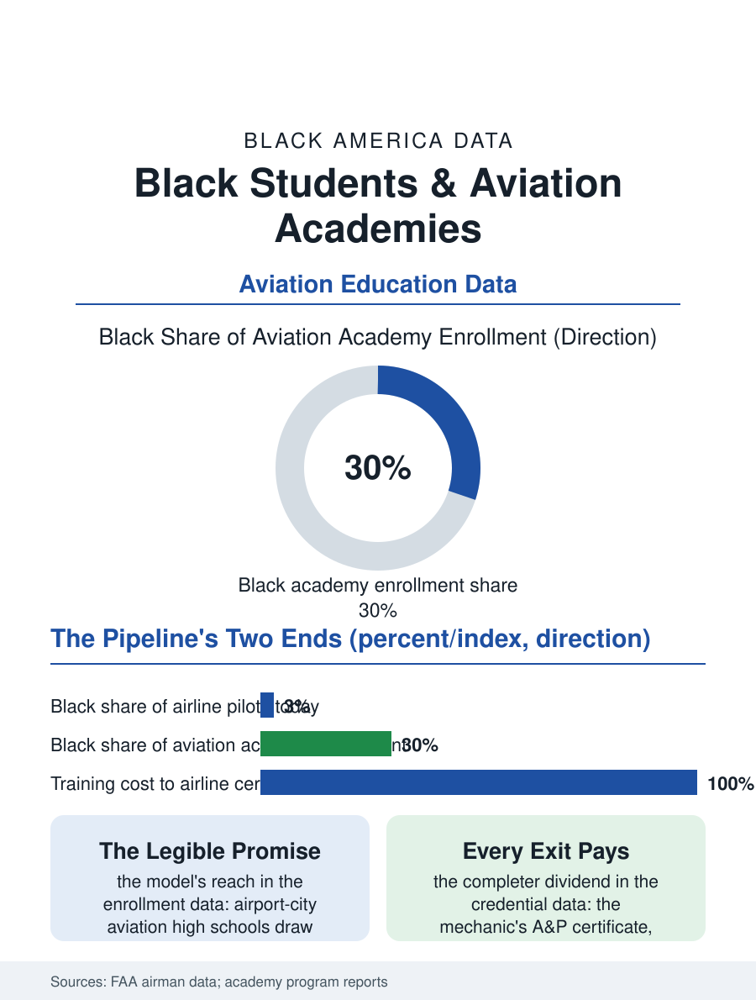

Black Education
The Runway: Black Students and Aviation Academies
Black students are thirty percent of aviation academies and three percent of airline pilots: the academies are the down payment on the flight deck's slow turning. The aviation file.

The aviation academy, the high school magnet built around flight, aerospace, and the airport economy, is one of the newer instruments aimed at the pilot pipeline's demographics, and its sites, from the storied aviation high schools of the airport cities to the drone and aerospace programs of the current wave, enroll Black students at rates the industry above them does not yet match. This article reads the aviation academy file.
The Pipeline Problem, From the Top
The industry's numbers frame the academy's purpose: Black pilots constitute roughly three to four percent of the airline pilot workforce in the federal and industry data, Black women well under one percent, the legacy of the exclusion the Tuskegee file records and of the training cost the modern pipeline charges, the flight hours to the airline transport certificate running into six figures of accumulated expense. The academies attack the pipeline at its widest point, the high school, where the exposure and the first certifications, the drone license, the ground school, the simulator hours, the dual enrollment aviation credits, can be delivered at public expense before the cost curve steepens. The flagship programs' enrollment data show the model's reach: the airport-city aviation high schools draw applicant pools in which Black and Latino students are the majority in several of the largest, the academy's promise, a visible runway from the neighborhood to the flight deck, legible to families for whom the industry had no address. The curriculum's breadth is the model's defense against the pipeline's length: the academy graduates mechanics and dispatchers and drone operators and aerospace engineers alongside the future pilots, the airport economy's whole occupational ladder of the employment file, so that the credential pays at every exit, not only at the captain's seat a decade and a medical certificate away.
Hours, Money, and the Long Climb
The academy's limit is the climb's remaining cost, and the file prices it honestly: the graduate leaves with the exposure, the ground knowledge, and in the strongest programs the private pilot certificate itself, an asset worth tens of thousands, but the instrument ratings and the fifteen hundred hours stand between the graduate and the airline's door, financed in the current system by instructing, by the military channel of the pilots file, or by the loan programs whose terms the wealth file's families weigh with the for-profit file's lessons in mind. The airline industry's own intervention, the cadet and pathway programs the majors built as the pilot shortage bit, now reaches into the academies directly, the conditional offer and the tuition assistance converting the academy's diploma into a financed pipeline for the students who clear the program's gates, with the Black academies' placement into those pathways the file's metric to watch. The mechanic and technician track tells the completer story: the airframe and powerplant certificate, earnable in the high school's own program in the strongest sites, is a direct ticket to the maintenance workforce's shortage wages, and the Black A&P population's growth from the academy base is the pipeline's least glamorous and most reliable dividend.
The Runway from the Neighborhood
The aviation academy file closes on the model's symbolic arithmetic, which its recruiters use without embarrassment: the flight deck is the most visible seat in the transportation economy, its occupant's voice the one the whole cabin hears, and the academies exist to make that voice, in the data's slow turning, sound like the country the cabin carries. The programs' obstacle file is the standard one's aviation form, the airport-adjacent land and the simulator capital, the instructor shortage that mirrors the pilot shortage one tier down, and the medical certificate's screens, whose vision and health standards channel the pipeline in ways the academies counsel around early. The enrollment trend is the file's forward line: applications to the flagship aviation magnets climb with each cohort the pathway programs publicize, and the Black enrollment share, several times the current pilot workforce's, is the demographic down payment on a flight deck twenty years out. The bureau of this file is the logbook, each hour inked and countersigned from the first discovery flight forward. The academies hand the logbook to the neighborhood's children at fifteen, with the first entries paid for by the public, which is the whole idea, and the data's early chapters say the idea, hour by hour, flies.
More in Black Education
Black Educational Attainment: High School Parity, the College Gap
About 89 percent of Black adults hold a high school diploma and one in four holds a bachelor's degree or higher — the attainment ladder, the college completion gap, and the generational trend.
Historically Black Colleges and Universities: Enrollment and Degrees
More than 100 HBCUs enroll roughly 290,000 students and award about one in six Black bachelor's degrees — an outsized share from a small sector. The federal education data.
Black College Enrollment: 2.4 Million Students
About 2.4 million Black students are enrolled in American colleges — nearly two-thirds of them women. The NCES enrollment data by sector, level, and trend.
Source: Federal Aviation Administration airman certification data; aviation magnet program enrollment and outcome reports.